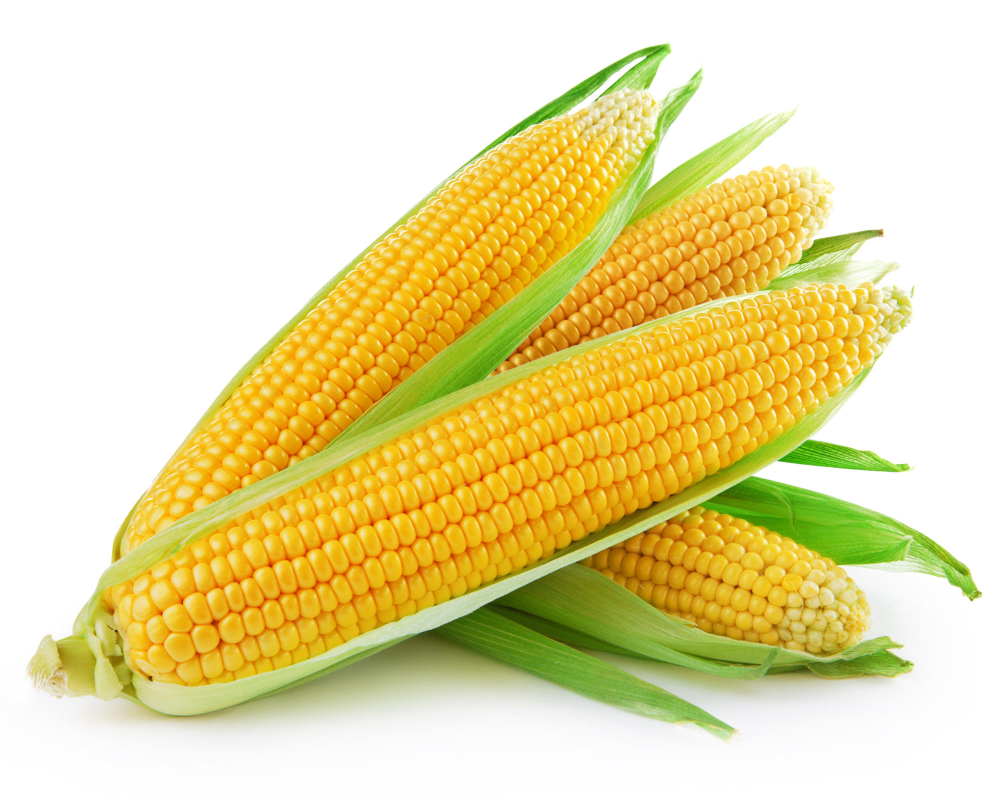

Score: 0
0
1.Quelle est la première
lettre de l'alphabet ?
E
A
G
D
2.Quel est le nombre
qui suit '5' ?
8
2
6
11
3.Quel fruit est jaune et courbé,
souvent associé aux singes ?
Banane
Pitaya
 Ananas
Ananas
Mango
4.Quel est le nom de l'animal
qui miaule et ronronne ?
Chat
Eléphant
Lion
Panda
5.Quel légume est vert et souvent
utilisé dans les salades ?
Caroute
Betterave
Concombre
Tomate
6.Quelle est la couleur du ciel
par temps clair ?
Rouge
 Jaune
Jaune
 Vert
Vert
Blue
7.Quel animal est surnommé
"le roi de la jungle" ?
Ours Brun
Giraphe
Lion
Zébre
8.Quel légume est souvent utilisé
pour faire de la soupe ?
Poiraeu
 Maïs
 Chou
Chou
Citron
9.Quelle est la forme géométrique
qui a trois cotes?
 Rectangle
Rectangle
Cercle
 Triangle
Triangle
 Carré
Carré
10.Quel est le nombre de pattes
qu'un chien a ?
6
4
2
3